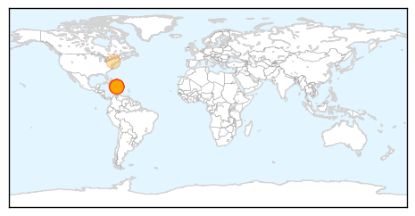

30 Day Trends
Web: 1 alerts, 0 warnings
Twitter: 0 alerts, 0 warnings
Top Articles:
- 1.000
- Heroes in Haiti battle forgotten cholera crisis
- 0.992
- Haiti Cholera Suit Struck Down
- 0.987
- Haitians cannot sue UN for cholera outbreak, U.S. judge rules
- 0.986
- Five years after quake, cholera epidemic haunts Haiti
- 0.985
- Five years after quake, cholera haunts Haiti
- 0.976
- U.S. judge rules Haitians cannot sue U.N. for cholera epidemic
- 0.973
- Five years after quake, cholera epidemic haunts Haiti
- 0.964
- U.S. judge rules Haitians cannot sue U.N. for cholera epidemic
- 0.964
- U.S. judge rules Haitians cannot sue U.N. for cholera epidemic
- 0.964
- UN 'immune' from #Haiti cholera lawsuit
- 0.964
- U.S. judge rules Haitians cannot sue U.N. for cholera epidemic
- 0.915
- US judge tosses lawsuit vs. UN over Haiti cholera outbreak
- 0.910
- U.S. judge rules Haitians cannot sue U.N. for cholera epidemic
- 0.901
- UN immune from lawsuit in Haiti cholera outbreak
- 0.851
- US judge tosses lawsuit vs. UN over Haiti cholera outbreak
- 0.542
- Haitians learn to live with disaster upon disaster
Top Tweets:
-
No tweets found for Jan 10, 2015
Web/News Articles

Tweets

Article Locations
Article Confidences